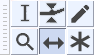
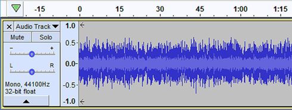

Time Shift Tool
To Time Shift using the mouse, select Time Shift Tool on Tools Toolbar or press the F5 shortcut.
- 
The image above shows the Tools Toolbar with the Time-Shift Tool selected.
- Click on this link to learn more about the Tools Toolbar.
- Click on other tools in the image to learn more about those tools.
Contents
- Time Shifting selected tracks to left or right
- Time Shifting clips to left or right
- Shifting clips vertically
- Shifting behind time zero
Time Shifting selected tracks to left or right
To shift multiple tracks to left or right, there must be a selection region in all the tracks you want to time shift, and you must drag from inside the selection region in one of those tracks.
To select multiple audio tracks for time shift, either
- click in the Track Control Panel of the first track you want to shift, then hold down Ctrl and click in the Track Control Panels of the other tracks you want to time shift
- use Up or Down arrow on the keyboard then Enter to select the other tracks you want to time shift. If the other tracks you want to time shift are adjacent to each other, you can simply hold Shift while using Up or Down arrow.
Having selected multiple tracks for left/right shift, you may still want to drag only one of the selected tracks to fine tune its position. You can do this in several ways. The simplest is to hold Shift while dragging the track you want to time shift. You can also temporarily deselect the tracks you do not want to move by Ctrl-clicking their Track Control Panels or by arrowing to them then using Enter. Alternatively if some of the track lies outside the selection region, drag from outside that region, which moves the track but not the selection region.
If you always want to retain synchronization between tracks when time shifting, you can alternatively enable Sync-Lock Tracks. When this is enabled, dragging any of the linked audio or note tracks will shift all the tracks in that group (and any labels as well), whether tracks are selected or not.
Time Shifting clips to left or right
An individual clip always shifts when dragged, though if the clip is partially selected, dragging to left or right from outside the selection region moves the clip without moving the region itself.
- To shift a group of adjacent clips in one or more tracks to left or right, leaving other clips alone, use Selection Tool to drag a selection region over the clips you want to shift, then switch to Time Shift Tool and drag from any clip inside that region. Dragging from white space between clips will do nothing.
- To shift all clips in one track to left or right, hold Shift then drag. If you perform the SHIFT-drag from inside a selection region, all the clips will shift and the region will move with the clips.
Shifting clips vertically
When there are multiple audio tracks, a selected audio clip may be dragged up or down to another audio track of the same type. Mono audio clips may only be dragged to mono tracks and stereo clips may only be dragged to stereo tracks. To prevent unwanted left or right movement while dragging, press and hold the Ctrl key while dragging (on Mac, hold down the ⌘ key).
Shifting behind time zero
If an audio track is dragged to the left (earlier on the Timeline) audio data may be hidden before the start of the track. This is indicated by the presence of two arrows at the left edge of the track.
- 
Audio before time zero is not exported unless that audio is explicitly selected and used, or unless Export Multiple is used with "Split files based on Tracks". In this Export Multiple by tracks case, the entire audio of each track is exported, including that behind zero, regardless of any selection.